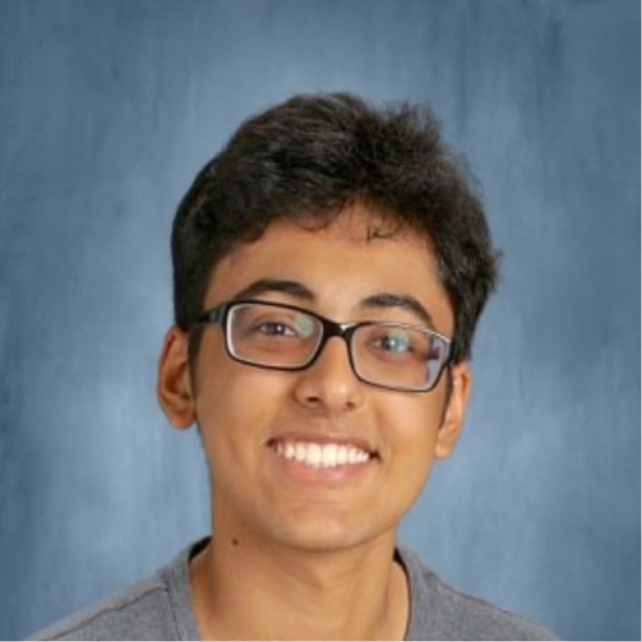

Shipping conversational AI at Insulytics
Building tools where data meets the real world.
I work at the intersection of applied AI, data infrastructure, and computational biology. I like shipping things: internal tools, ML pipelines, research code that actually finds something. Currently building a natural-language analytics layer for a B2B SaaS, running an independent transcriptomics study on the side, and teaching venture-building to ~80 students.

Currently building
/01A conversational analytics layer for insurance data.
Building a client-facing analytics dashboard with a natural-language query interface , so non-technical users can ask questions of structured datasets and get back charts, tables, and DAX-driven insights. Working through the real product tradeoffs: data security boundaries, latency, cost-per-query, and what to do when the LLM gets the schema wrong.
Power BI
DAX
SQL
Azure
LLM integration
Builds & projects
/02BCC Expression Pipeline
16k genes · 13 hits · solo
End-to-end bioinformatics pipeline for differential expression analysis on a basal cell carcinoma dataset. Found 13 highly upregulated genes ; 10 of which weren't flagged in prior published work , including a candidate that may explain BCC's slow-growth phenotype.
Python
R
bioinformatics
Sandalwood Transcriptomics
9 climatic regions · in progress
Computational analysis of gene expression variation in Indian sandalwood across climatic gradients. Working under a Cornell-trained PhD biostatistician (genomics company founder). Manuscript planned for Summer 2026 submission.
Python
RNA-seq
stats
Mars Habitat Proposal
2nd national · top 5 of 60+
15-page technical proposal for a sustainable Mars habitat using >80% in-situ resources. Mentored by 3 Lockheed Martin engineers, then pitched to an executive panel for the final round.
systems design
technical writing
LEAD Entrepreneurship
Co-Chair · 78 students · 12 facilitators
Designing and teaching curriculum for a venture-development program across 6 classrooms. Student ventures presented at the SLX symposium. Equal parts product design, ops, and pedagogy.
curriculum
teaching
ops
TALENT Curriculum
Lead · accredited · $6k awarded
Leading development of a dual-credit entrepreneurship curriculum that secured university accreditation. Supports summer programs and a statewide pitch competition with $6,000 in prizes.
curriculum
accreditation
It's Our Future · Climate Org
2026 Co-Chair · 26 schools · 100+ students
Co-Chair of Illinois's first Youth Climate Justice Summit. Oversee 4 subcommittees and a follow-up initiative tracking school-level climate action plan implementation.
org-building
events
Research output
/03Dermatologic Surgery · Peer-reviewed · PubMed-indexed
First-author clinical case report.
Led literature review, manuscript writing, and submission with a dermatology resident and clinical team. First author.
EADV 2026 · Abstract submitted · Manuscript in progress
Differential expression markers of slow-growth phenotype in basal cell carcinoma.
Independent computational study. Submitted abstract to the European Academy of Dermatology & Venereology; drafting full manuscript for peer-reviewed submission.
In preparation · Summer 2026
Transcriptomic adaptation in Indian sandalwood across climatic gradients.
Computational analysis of gene expression variation across 9 regions, with a Cornell-trained PhD biostatistician.
Timeline
/042026 · Q2
ShipBuilding conversational AI for insurance analytics at Insulytics Inc.
2026 · Q1
SelectedStudent delegate to UN COP31: 1 of 4 from a 40,000-person conference.
2026 · Q1
SubmitAbstract submitted to EADV 2026 on basal cell carcinoma transcriptomics.
2025 · Q4
PublishFirst-author paper out in Dermatologic Surgery (PubMed-indexed).
2025 · Q3
Win2nd nationally at the Lockheed Martin Mars Mission Challenge: top 5 of 60+ teams.
2025 · Q2
SelectedGlobal Leadership Program, India (~300 of 1,600 applicants).
2025
ShipStarted independent BCC bioinformatics pipeline; began sandalwood transcriptomics work.
Recognition
/05- Dermatologic Surgery, First Author2025
- Lockheed Martin Mars Mission, 2nd National2025
- National History Day, 1st Place Documentary (Regional)2024
- AP Scholar with Distinction2025
- National Spanish Exam: Bronze, Silver, HM2023–25
- COP31 Delegate, UN Climate Conference2026
- Global Leadership Program, India2025
- EADV 2026, Abstract Accepted2026